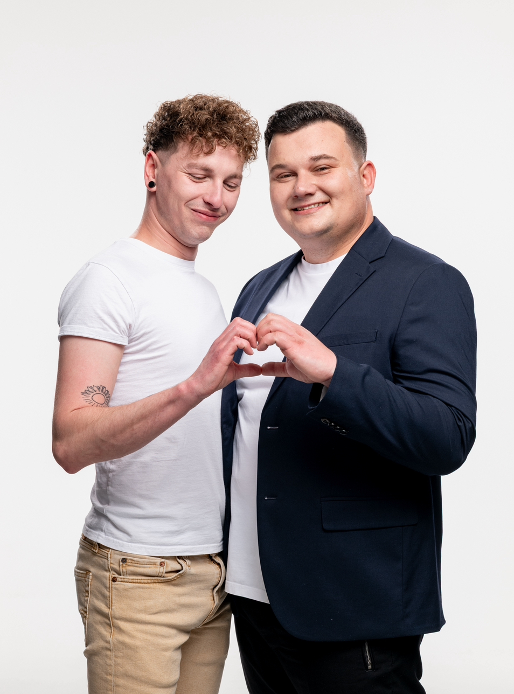

Dáváme na vědomí, že jsme se rozhodli spojit své životy a udělat důležitý krok společnou cestou.
A protože v tom nechceme být sami, zveme vás, naše rodiny a přátele, abyste u toho byli s námi.

Harmonogram
Společný průvod
Ve 13:30 vycházíme pěšky z adresy:
Vlkanov 1, 507 71 Miletín
na místo obřadu. Budeme rádi, když půjdete s námi.